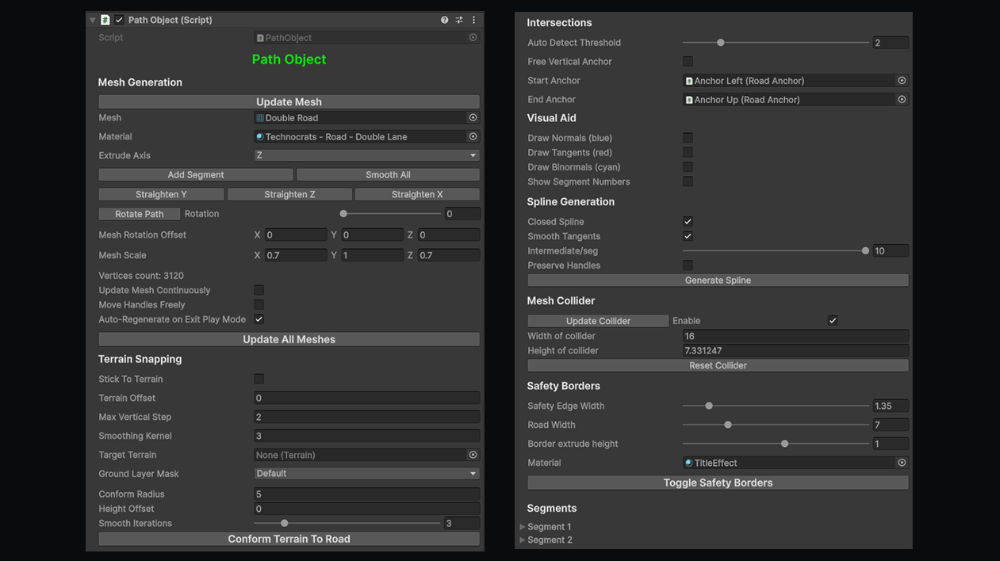
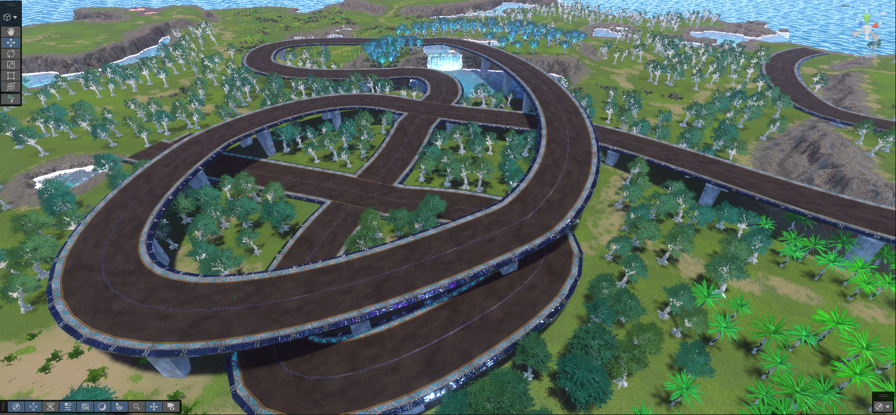
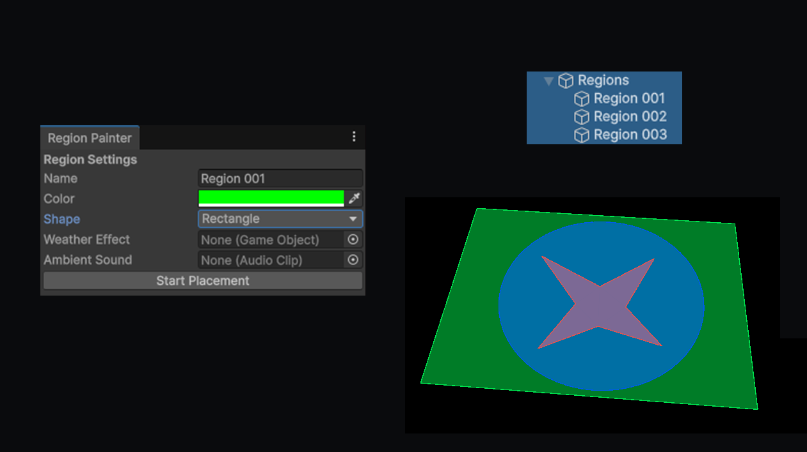
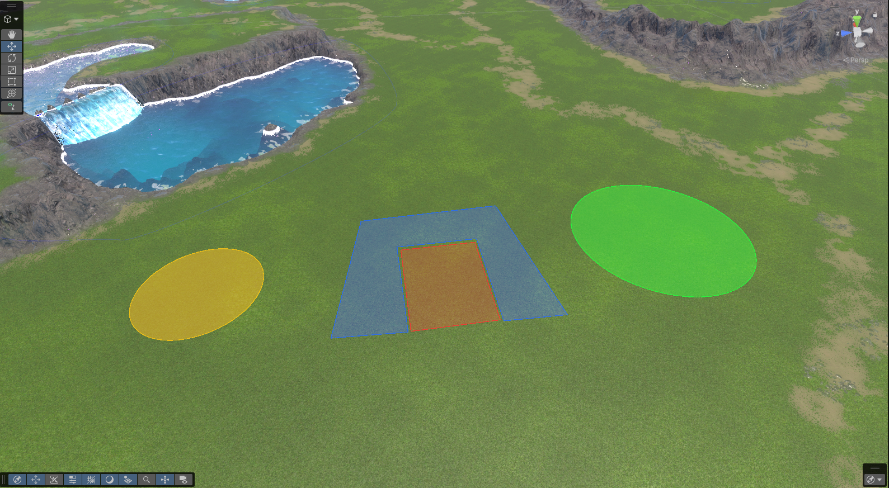
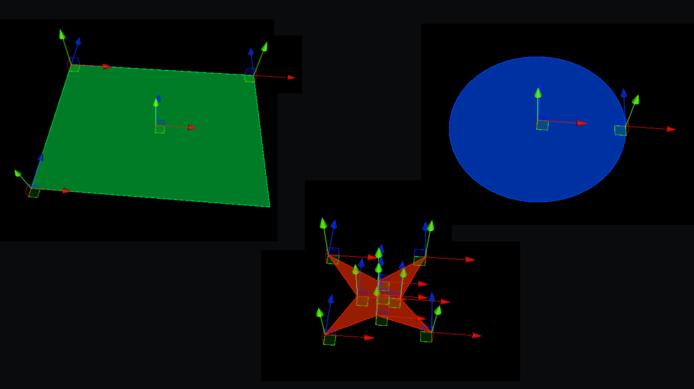
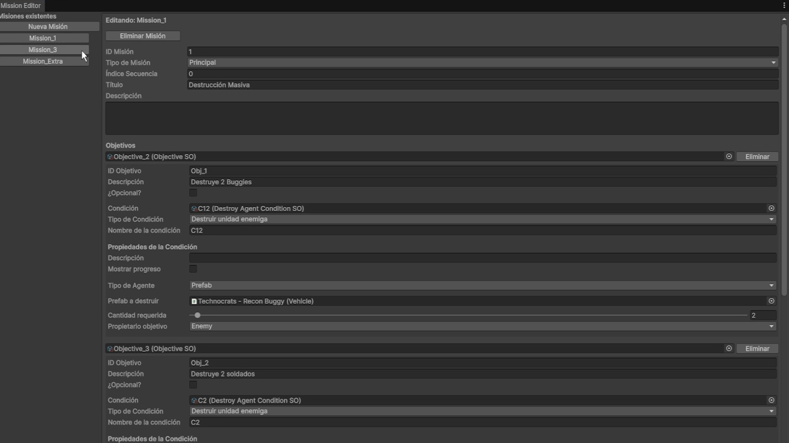
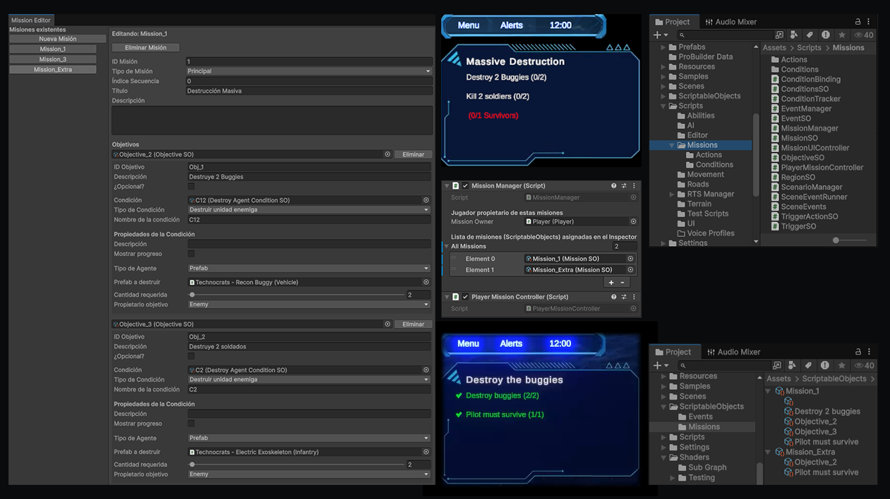

C# TOOLS | UNITY EDITOR
UNITY TOOLS
Real-time materials and procedural rendering techniques developed in Unity using Shader Graph, HLSL and custom shader workflows.
01
Prefab Painter
PREFABS | TERRAIN
C# | UNITY
+
Prefab painter utility for using in the Unity editor
A complete tool for placing prefabs everywhere. It allows group painting, color variations, random rotation and size, place over other objects or floating at a desired height...


TECHNICAL BREAKDOWN
- Filter prefabs by category folder.
- Allow the placement of variants of the same prefab.
- Placement on the terrain or over other objects with colliders.
- Scale, rotation and height can be modified manually.
- Possibility to randomize size, rotation and color between established parameters.
- Brush mode allowing to place multiple prefabs taking into account the established random parameters.
- Erase mode for deleting multiple prefabs at once.
- Ditribution of the prefabs in categories folder to keep them organized.
EXPOSED PARAMETERS
02
Road Path Tool
SPLINES | ROAD BUILDING
C# | UNITY | SPLINES
+
Interactive Volumetric Fog Of War
Custom spline-based path generators for quick infrastructure and terrain alignment. It allows the use of different meshes as railways, roads, pipes, cables... It also uses spline anchors snapping with intersections.


TECHNICAL BREAKDOWN
- Spline based mesh deform, allowing different meshes.
- Real-time spline modification. It allows on-demand update for complex meshes.
- Stick to terrain or adjust height manually.
- Snap to the anchors of intersection prefabs.
- Add or delete segments.
- Generate navigation and colliders.
- Generate security borders for unit navigation without jumping over the borders.
- Generate spline for using with unit routes.
EXPOSED PARAMETERS
03
Region Painter
REGIONS | UNITY GUI
C# | UNITY
+
Region Painter Tool
A tool able to create on the terrain regions of different shapes to use with mission or event editors.



TECHNICAL BREAKDOWN
- Create regions of diferent shapes (Rectangle, Circle, Polygon).
- Establish a name and color to identify the regions easily.
- Edit region points or delete regions.
- Use the regions with mission and event editors to detect events within the regions.
- Possibility to attach weather VFX or ambient sound to the region.
EXPOSED PARAMETERS
04
Mission Editor
EVENTS | CONDITIONS
C# | UNITY
+
Mission Editor with Scriptable Objects
The mission editor can combine different types of mission and conditions to generate a lot of possible missions and events to any game.


TECHNICAL BREAKDOWN
- Mission editor able to generate events for in-game implementation.
- Multiple condition types, with the possibility to add combined conditions or add more than one.
- Options to show mission progress and generate events when mission is acomplished.
- Missions can be ordered and sorted into main or secondary missions, which can be optional.